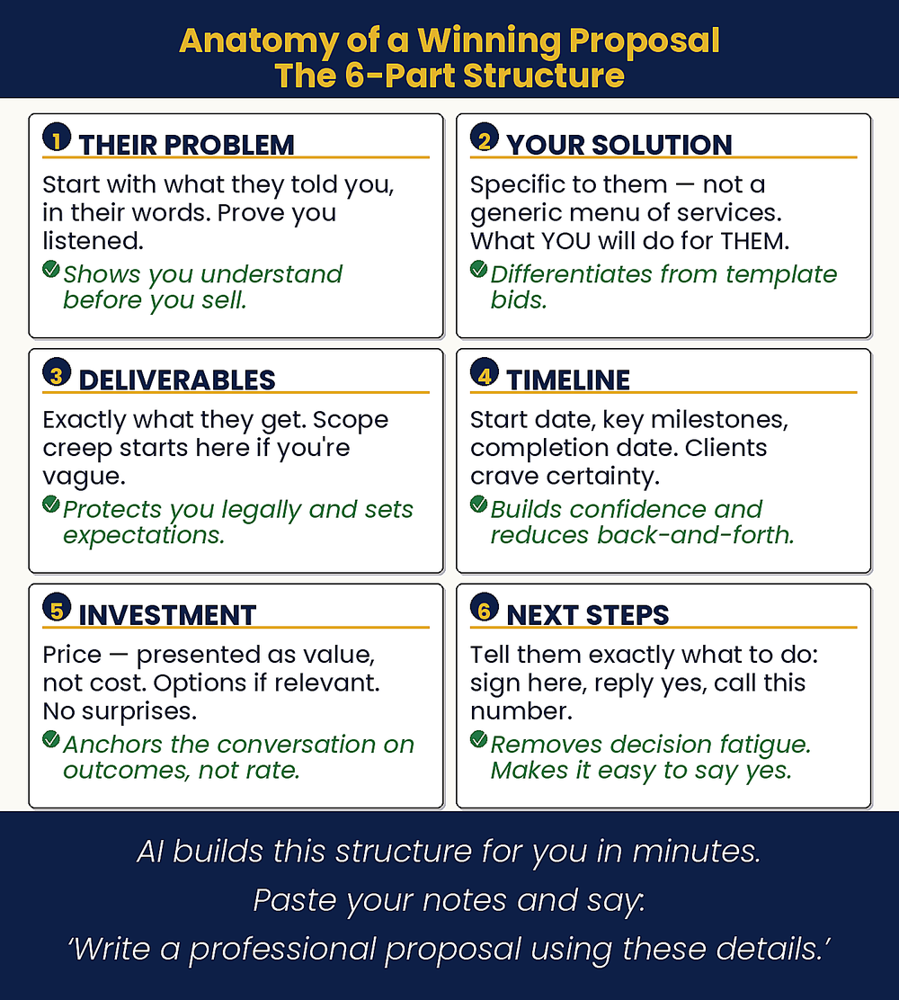

Chapter 14: Write It. Send It. Close It.
Proposals That Win Business
How do I create professional proposals and quotes without spending hours on paperwork?

Chapter Recap
A strong proposal can win the job. A weak one loses it. This chapter helps you write proposals and quotes that close. Build one master template, then customize it for each client in minutes. Clear scope language protects you from surprise requests. A simple change order covers extra work. AI drafts all of it fast. You spend less time on paperwork and more time winning business. Have real contracts reviewed by an attorney.
Note: These are starting points, not legal documents. Employment and contract law vary by place. Have any formal document reviewed by a qualified attorney before you use it.
In This Chapter
- The Anatomy of a Winning Proposal
- Building Your Master Template
- Quotes vs. Estimates: Protecting Yourself
- Basic Contracts and Agreements
- The Paper Trail Habit
Grab-and-Go Prompts
1. Build Your Master Proposal Template — run once, save it, reuse
You are an expert business proposal writer. I run a [describe your business]. Help me build a professional proposal template I can customize per client. Include sections for: executive summary, our approach, scope of work, investment, and next steps. Use clear, confident language. Avoid corporate filler. The tone should be [professional and direct / warm and collaborative].
2. Stress-Test a Proposal — read it like a skeptical buyer
Read this proposal as a skeptical buyer. What questions does it leave unanswered? What objections does it fail to address?
3. Write Scope-of-Work Language — protect yourself from scope creep
You are a business consultant who writes clear, plain-English project scopes. Write scope-of-work language for a [type of project] that clearly lists what is included, what is not included, and what will trigger an additional charge. Keep it clear and plain English, not legal jargon.
4. Draft a Simple Service Agreement — plain-English basics
You are a business writing expert who drafts plain-English operational agreements. Draft a simple service agreement for a [business type] covering: scope of work, payment terms [describe yours], revision policy, and what happens if either party needs to cancel. Keep it clear and in plain English. No legal jargon.
5. Write a Change Order — document extra work
You are a professional business writer. Write a change order for a [project type]. The original scope was [brief description]. The client has requested [the new item]. The additional cost is [amount], and the revised timeline is [timeline]. Keep it brief and professional.
6. Recap a Client Meeting — a clear paper trail
You are a professional business writer who creates clear, concise client communications. Summarize these meeting notes into a brief client-facing recap: what was discussed, what was agreed, and what the next steps are for each party.
Download
- 📄 Proposal and Quote Pack — a proposal template builder, scope-of-work language, and a change order template.
Your Move
Pull up the last proposal or quote you sent. Identify the three weakest sections, the parts that are vague, generic, or could belong to any business in your industry. Use the proposal template prompt from this chapter to rebuild those sections today. Then build your master template so it’s ready before the next opportunity arrives. Your goal for the next thirty days: cut your proposal production time in half.

Read the full chapter in
AI Jiu-Jitsu: Run Circles Around the Big Guys, the book this toolbox comes from.
Prefer to have it set up for you? BreakThru Growth offers AI coaching and done-for-you setup for small businesses → BreakThruGrowth.com